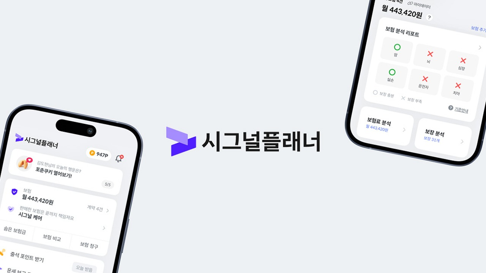
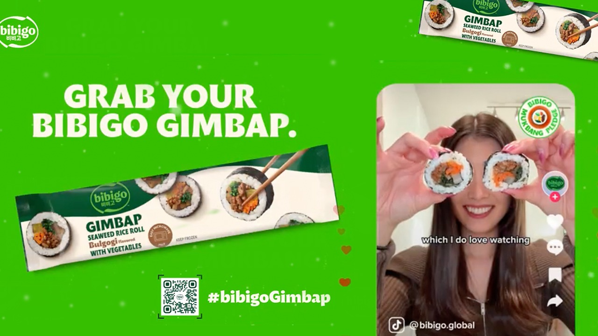
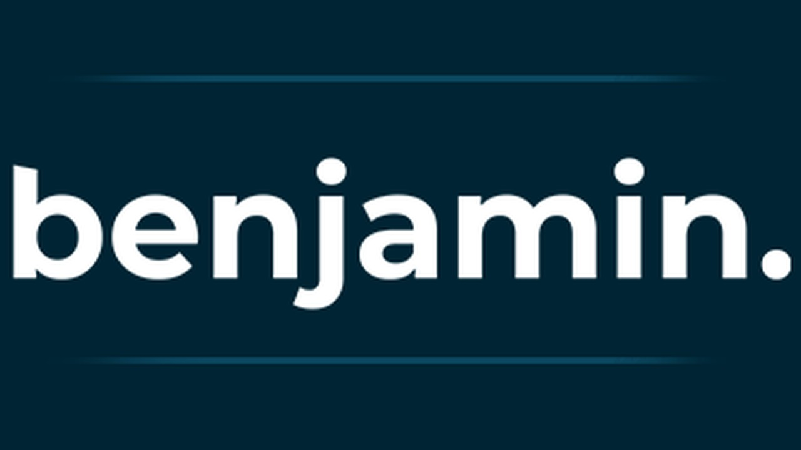
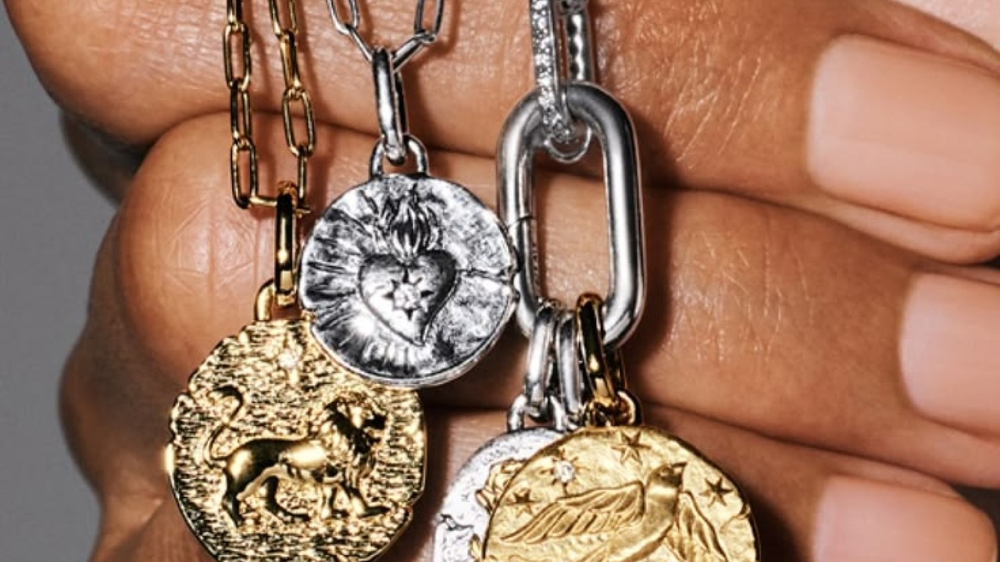
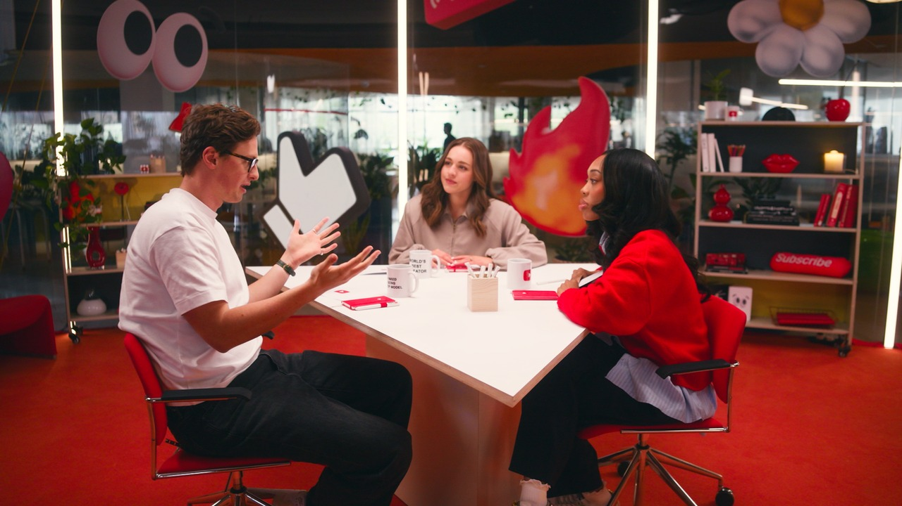
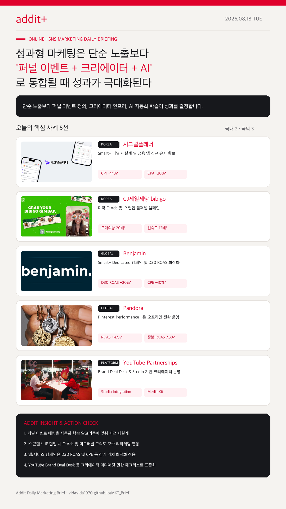

01
퍼널 이벤트 재설계가 Smart+ 자동화 성능을 결정한다
시그널플래너(CPI -44%, CPA -20%)처럼 머신러닝 학습 방식에 맞춰 이벤트 매핑을 재설계할 때 자동화 캠페인의 진짜 성과가 나타납니다.
Smart+ 퍼널 이벤트 재설계, K-콘텐츠 C-Ads 풀퍼널, D30 ROAS 최적화, YouTube Studio 크리에이터 관리가 하나의 시스템으로 작동합니다.
시그널플래너(CPI -44%, CPA -20%)처럼 머신러닝 학습 방식에 맞춰 이벤트 매핑을 재설계할 때 자동화 캠페인의 진짜 성과가 나타납니다.
CJ제일제당 bibigo(구매 의향 20배, 친숙도 12배) 사례처럼 대세감 형성 후 고의도 행동자를 C-Ads로 리타겟팅하는 퍼널 연결이 필수적입니다.
Benjamin(D30 ROAS +20%, CPE -40%) 사례처럼 Smart+ Dedicated 캠페인과 장기 가치 이벤트를 결합할 때 고품질 유저가 확보됩니다.
Pandora(ROAS +47%, 증분 ROAS 7.5%) 사례처럼 AI 기반 크리에티브 최적화와 오프라인 매장 영향 측정이 단일 캠페인에서 관리됩니다.
YouTube Creator Partnerships (Brand Deal Desk 시리즈)처럼 미디어킷, 브리프, 성과 공유가 플랫폼 내부 시스템으로 고도화됩니다.

KOREA금융 카테고리에서 MMP 이벤트 구조를 재점검하고 Smart+를 적용해 CPI 44% 개선, CPA 20% 개선, CPM 41% 개선을 달성했습니다.

KOREASEVENTEEN·LA Lakers 협업 대세감과 인플루언서 챌린지를 C-Ads 미드퍼널 리타겟팅과 연결해 구매 의향 20배, 친숙도 12배, 광고 상기도 4배 상승을 기록했습니다.

GLOBALSmart+ Dedicated 캠페인 및 다국어 자동 번역을 활용해 광고 지출 2.2배 확대, D30 ROAS 20% 개선, CPE 40% 감소, CPI 25% 감소를 달성했습니다.

GLOBAL미국·영국·독일 캠페인에 Performance+ AI 크리에이티브 최적화 및 스마트 타깃팅을 적용해 평균 증분 ROAS 7.5% 상승, ROAS 47% 증가를 기록했습니다.

PLATFORMYouTube Studio 내부 Creator Partnerships 탭을 통해 브랜드 문의, 미디어킷, 성과 공유 및 협상 프로세스를 시스템화했습니다.
Demand Gen 지면에서 Checkout Links를 통해 크리에이터 콘텐츠에서 장바구니/구매 페이지로 직결됩니다.
Google Ads Blog →Search, YouTube, Discover 광고에 `How this ad was made` 패널 및 AI 라벨링 요구사항이 전면 적용됩니다.
Google Blog →
성과형 마케팅은 단순히 소재 수를 늘리는 것을 넘어섰습니다. 자동화 알고리즘에 맞춘 퍼널 이벤트 정의, 크리에이터 섭외-재증폭 체계, AI 광고 투명성 대응이 함께 설계될 때 지속 가능한 성과가 만들어집니다.
{kind=link}